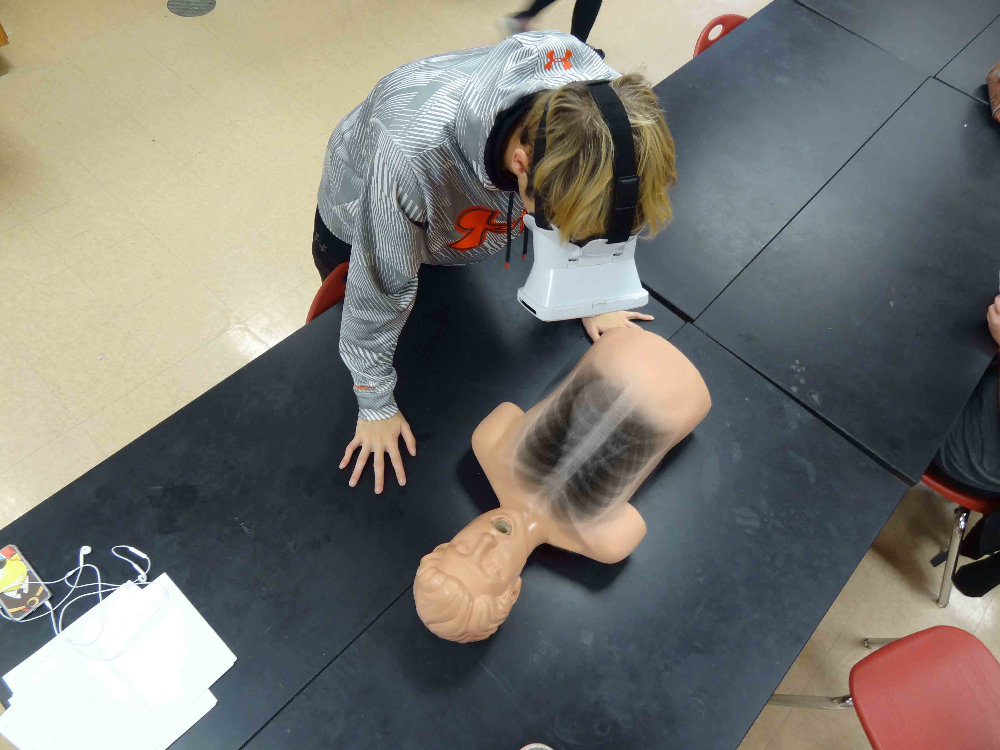
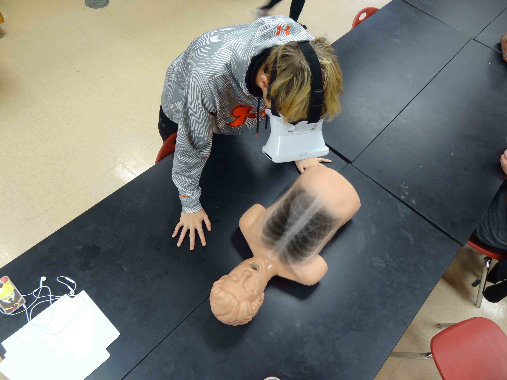

Medical Field Advancements
The expansion of augmented reality has rapidly increased over the past decade. Augmented reality projects computer graphics over the natural surroundings to enhance daily applications. With AR quickly entering the mainstream industry, the growth and expansion of it are ascending into society's daily lives. Soon enough, it'll be included along many aspects of the medical field.
The medical field uses every bit of technology to benefit the well-being of people. The relationship between a patient and a doctor may grow deeper as they can communicate issues in a more detailed way through augmented reality. It can project simulations for conditions and symptoms anyone is experiencing to help pinpoint the area of discomfort. These projections allow doctors to visualize specific areas in a person’s body. For example, the veins and internal organs can be shown to allow efficient diagnostics for any illness. This goes along with educating the next generation. AR can impact medical students in a positive way. The technology can display anatomical models, which allows students to inspect how certain functions of our bodies work. This helps students build a foundation for the knowledge and experience required once their studies are completed. AR has provided an opportunity to promote an overall healthy well-being. The technology gives extensive assistance to students while also providing potential knowledge to enhance the management of society’s health. In time, we’ll be able to use augmented reality effectively for the benefit of medical advancement and treatment.
 
